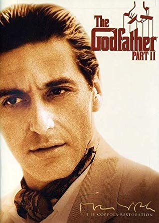
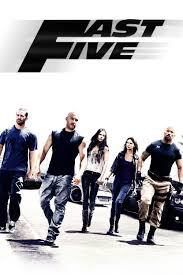
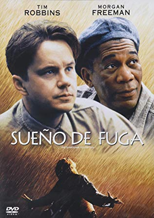
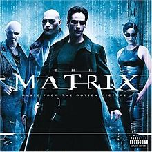

Omiljeni filmovi
| Ime filma |
Kratak opis |
Zanr |
Datum izlaska |
Cover slika |
Link |
| Godfather Part II |
Kopola nas u priču uvodi pedesetih godina
prošlog veka. Na čelu mafijaške porodice
Korleone je Majkl koji se trudi da legalizuje
poslove. Takodje se prikazuje zivot Vita Korleona
od rodjenja do smrti. |
Kriminal, Drama |
20. Decembar 1974. |
 |
IMDb |
| Fast 5 |
Dominik Toreto i njegova posada ulicnih trkaca
planiraju ogromnu pljacku kako bi kupili svoju
slobodu ali na tom putu im se suprotstavljaju
agent Hobbs i brazilski narko-boss. |
Akcija, Triler |
29.April 2011. |
 |
IMDb |
| The Lord of the Rings: The Return of the King |
Film počinje pričom o Smigolu i pričom o tome kako
je našao Jedinstveni prsten i kako se postepeno
pretvarao u Goluma. Film prati dve priče. Prva priča
je o Frodovim i Semovim pustolovinama dok je druga o
Ratu za prsten. |
Akcija, Avantura |
26. Decembar 2003. |
 |
IMDb |
| The Shawshank Redemption |
Film govori o priči Endija Dufrena, bankara
koji je proveo 19 godina u Šošenk Državnom zatvoru
za ubistvo žene i njenog ljubavnika uprkos tome što
se izjasnio kao nevin. Tokom boravka u zatvoru,
sprijateljio se sa zatvorenikom, Elisom Bojdom
Redingom (Morgan Friman), i čuvari su ga štitili
pošto ga je upravnik koristio za pranje novca. |
Drama |
14. Oktobar 1994. |
 |
IMDb |
| The Matrix |
Tomas A. Anderson vodi dvostruki život. U jednom je
programer ugledne kompanije za proizvodnju softvera — Metacortex.
U drugom je Neo, haker koji noći provodi za računarom pokušavajući
da stupi u kontakt sa Morfijusom, najpoznatijim svetskim hakerom koji
je u bekstvu. |
Akcija, Naucna-fantastika |
31. Mart 1999. |
 |
IMDb |